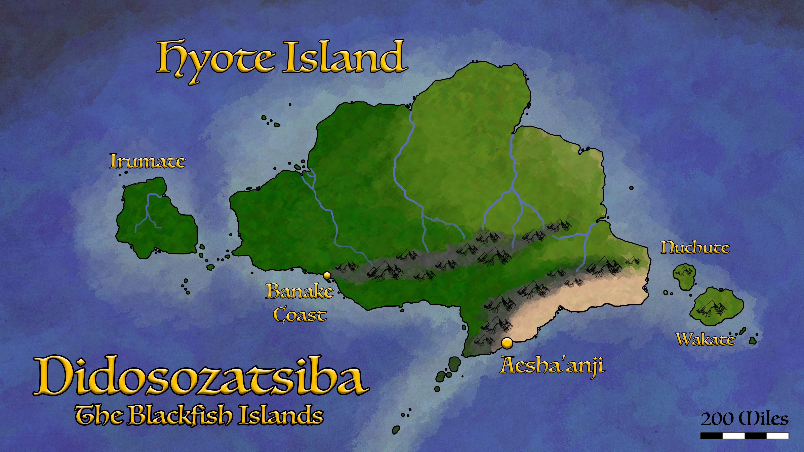
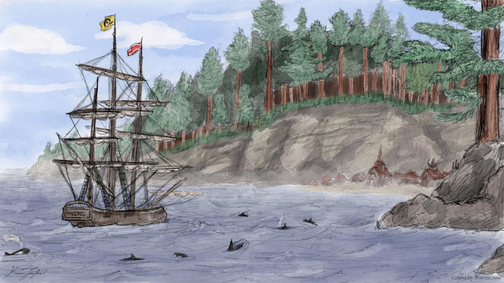
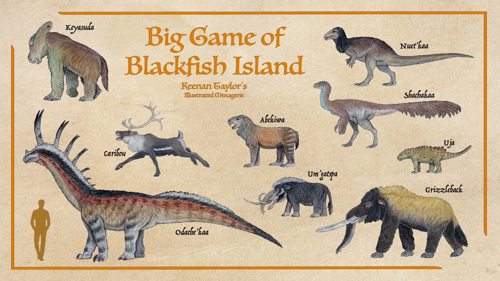
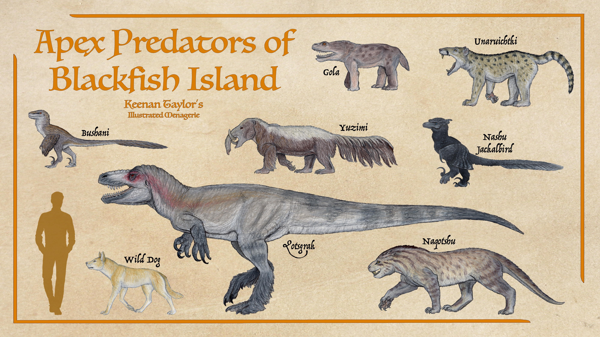
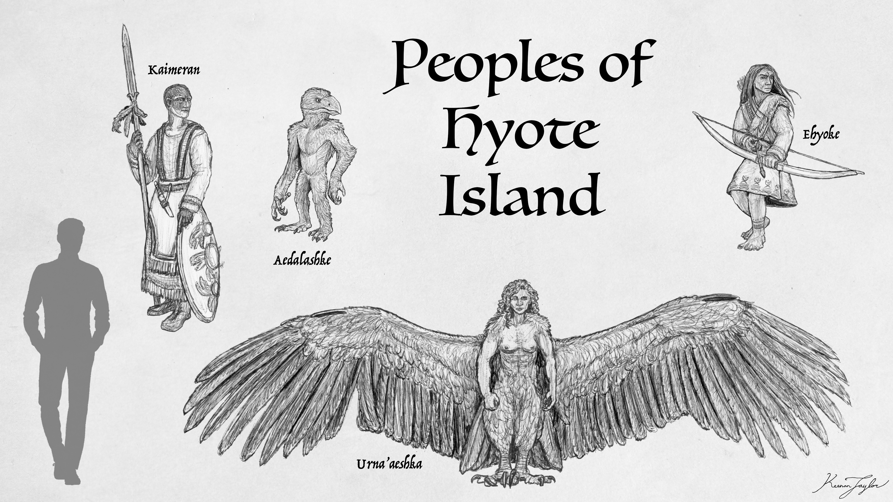
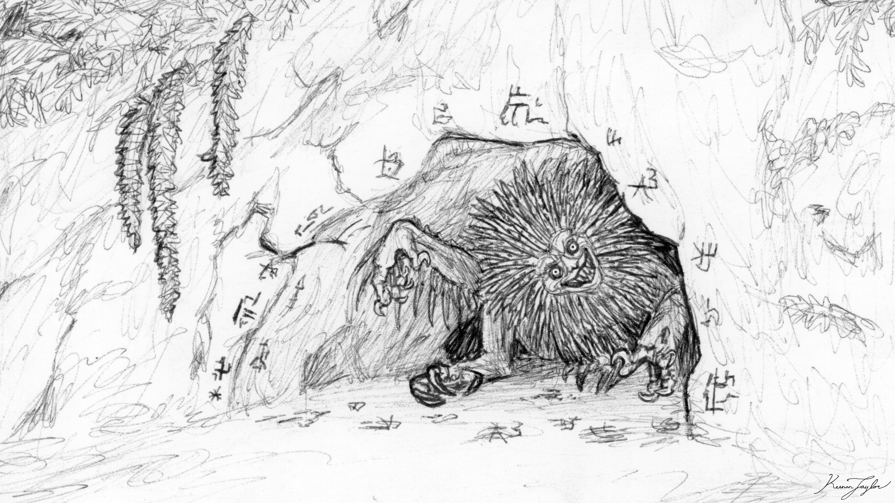

01 · INTRODUCTION
Overview

Didosozatsiba, commonly known as Blackfish Islands, is one of the largest and least thoroughly documented landmasses of the northwestern Great Khalin Sea. Comparable in area to the Qajarith Peninsula, the islands occupy a distinctive position within the Khalin islands, retaining an unusually rich assemblage of native fauna and several ancient evolutionary lineages that have disappeared elsewhere. Its isolation, both geographical and cultural, has made it one of the most enigmatic regions of Kaimere.
The island is primarily inhabited by the Tsuu Henjin, a maritime people whose most prominent religious faction is the Saibomashake, or People of the True Path. Commonly referred to as the Blackfish Cultists, they maintain a reputation for hostility toward outsiders, particularly the Free-States and their allies. Their territories have historically been considered dangerous enough that the Assembly prohibited exploration of the island and surrounding waters for much of its history.

The Assembly's limited knowledge of the Blackfish Islands derives principally from the journals of Felicity Morgan, a witch who survived nearly seven years of captivity among the islanders, and the disastrous expedition of the ARS Scrimshaw in 1799. The latter resulted in the deaths of twenty-seven Assembly memmbers and established the island's enduring status as forbidden territory. Subsequent investigations have been limited to distant coastal observations, scattered specimens, and fragmentary accounts from neighboring peoples.
Hyote, the principal island of the Blackfish territories, is characterized by a predominantly forested landscape, substantial native megafauna, and an unusually intact predator community. Unlike many other islands of the Khalin Sea, where mainland introductions and climatic changes have substantially altered native ecosystems, Hyote appears to have retained much of its original fauna. Its forests, mountainous interior, and extensive coastal wilderness have preserved a biological assemblage that is both ancient and poorly understood.
Although the island's reputation is dominated by its inhabitants and their religious practices, its natural history is equally remarkable. Hyote is an island of considerable ecological diversity, where giant parasauropods, unusual multituberculates, relic proboscideans, and numerous endemic predators persist in a landscape shaped by millions of years of isolation.
02 · Biomes and Plants
Landscape Structure and Vegetation
Hyote is approximately the size of Borneo and occupies a geographically isolated position within the northwestern Khalin Sea. Its surrounding waters are characterized by deep submarine trenches that separate it from mainland Arvel, contradicting earlier assumptions that the island was once connected to the continent by a continuous land bridge. The southern highlands rise considerably above the surrounding landscape, forming a mountainous interior that transitions into extensive forests and lower coastal regions.
The island's geological history is closely associated with the broader Khalin islands. During periods of lower sea level, numerous near-surface mountains to the south would have emerged as smaller islands, potentially allowing terrestrial animals to disperse between them. The last substantial opportunity for mainland colonization is believed to have occurred during the Great Drying approximately eight million years ago, when island-hopping animals may have traveled through Qajar, Qadan, Khalren, the Akanuk Islands, and the other islands sourroudning Hyote. This would have represented a journey of several thousand miles, although the duration and precise configuration of these temporary connections remain uncertain.
Hyote lies within a climatically favorable region of the Khalin Sea. Its position relative to prevailing winds and major volcanic events appears to have protected it from the most severe consequences of the Dynastic Extinction. Whereas Pakardia and Qadan experienced substantial losses among their native megafauna, Hyote seems to have retained a considerably larger proportion of its original terrestrial fauna. Its comparatively stable climate and extensive forest cover may have contributed to this survival.
The western portion of the island supports dense temperate rainforest. These forests are characterized by substantial canopy cover, abundant moisture, and a complex understory of ferns, shrubs, and trees like pine and maple. The vegetation becomes progressively more open toward the east, where woodland and scattered tree cover give way to drier landscapes. The eastern coast receives less precipitation and contains a mosaic of open woodland, scrub, and grassland, although even these relatively arid regions retain considerable tree cover.
The southeastern coast is particularly distinctive. A stretch of approximately four hundred miles is dominated by relatively open terrain, contrasting sharply with the densely forested western and central portions of the island. It is uncertain whether this landscape represents a naturally occurring ecosystem or one substantially modified by the island's inhabitants through repeated burning and clearing. Its present appearance may therefore reflect a long history of human land management rather than purely climatic conditions.
The island's interior contains extensive highlands, dense forests, and mountainous terrain. These regions remain largely inaccessible to the Assembly and are inhabited by several peoples who rarely establish permanent settlements along the coast. The forests are particularly important to the Aedalashke, or crow-folk, while the mountainous interior supports the Urna'aeshka sirens and numerous Ehyoke settlements.
Freshwater environments, including rivers, lakes, and lowland swamps, are also important components of Hyote's landscape. These waterways support substantial populations of aquatic birds, fish, and amphibious predators. The yotenstork is particularly associated with these environments and is reported to travel inland primarily along rivers.
The island's vegetation and topography have strongly influenced its animal communities. Dr. Ignatius Belgrave famously characterized Hyote as an island of “brawn over bustle,” noting the apparent scarcity of animals specialized for sustained running or pursuit. The predominance of forested environments favors large, powerful herbivores and ambush predators rather than the highly cursorial fauna characteristic of open mainland grasslands.
03 · Flying fauna
Aerial Community
The aerial community of Hyote is comparatively poorly documented, although several distinctive birds and bird-like peoples are known from Felicity Morgan's journals and subsequent investigations.
Above the southern rainforests, the canopy hosts a broad assortment of insectivorous and frugivorous birds, while the northern steppe supports more open-country flyers and aerial hunters. Seabirds are particularly prominent along the coast, where cliffs, tide lines, and offshore currents provide nesting and feeding opportunities.
Falladactyls occur in the island's coastal zone, especially around rocky shores and shallow waters. Their terrestrial competence and ability to launch from uneven surfaces make them well suited to the broken shoreline topography of Blackfish Island. These small pterosaurs likely exploit fish, small crustaceans, and shore-living invertebrates. Murphy's pterodactyls are very likely present in the coastal airspace, where they may occupy similar niches as generalized marine foragers and scavengers.
Among birds, the northern and coastal skies are likely shared by gulls, petrels, corvids, and the larger aerial predators typical of the Khalin Sea. The cresting currents and wind corridors around the island favor efficient soaring species, particularly those able to patrol shorelines and exploit carcasses. Corvids of various kinds almost certainly occur as scavengers and opportunists, with ravens and crows benefiting from both marine carcasses and the remains of terrestrial predators' kills. The island's coastal communities probably also sustain substantial populations of gull-like birds and petrels, especially where the sea yields fish, carrion, and storm-washed refuse.
The titan crow is especially significant as a seasonal predator and scavenger. On the Blackfish Islands it is likely among the most important aerial carnivores, capable of hunting across open country, forest edge, and even along the coast. Its enormous size, intelligence, and ability to shift ranges make it a formidable resident of the island's uplands and exposed northern country.
In the rainforest, smaller forest birds and canopy insectivores would be expected to be abundant, though their exact composition remains poorly known.
04 · The Vegetarians
Herbivore Community

Hyote possesses an unusually diverse assemblage of large herbivores, many of which represent surviving descendants of native lineages that were substantially reduced or eliminated elsewhere in the Khalin Sea. The island's stable climate and relatively limited faunal turnover appear to have permitted these animals to persist alongside more recent introductions.
The odache'kaa, translated by Morgan as the Quiver in His Neck, is the largest terrestrial animal reliably associated with Hyote in the surviving historical accounts. It is described as a long-necked, furred or feathered beast with claws and a series of horns or projections extending along its neck. Morgan's sketches and several later photographs suggest a large parasauropod, although its precise phylogenetic position remains uncertain. The prevailing hypothesis places it among the Xiphoderidae, a family of parasauropods known from fossils elsewhere in the Pakardiokhalin archipelago. Xiphoderids appear to have been much more widespread before the major faunal turnover approximately 1.5 million years ago. Cooling conditions and the arrival of mainland and harvested fauna caused substantial losses among the native megafauna of the Khalin Islands. In Pakardia and Qadan, most large native forms disappeared, but smaller surviving lineages subsequently diversified. Hyote may represent another refuge in which these animals persisted. The odache'kaa is believed to live in small herds and undertake seasonal movements. Most documented sightings have occurred in the lowlands during winter, suggesting that the animals descend from higher elevations when seasonal conditions favor grazing or browsing. Photographs indicate that they hold their heads high and can rear onto their hindlimbs for short periods. Their long necks would allow them to reach vegetation unavailable to many other herbivores, making them probable high browsers within Hyote's forests and woodland margins. Their precise diet, reproductive biology, and social organization remain unknown. The odache'kaa is particularly important to the study of Hyote because it may represent the survival of a once-widespread dinosaurian lineage that disappeared from most of the surrounding archipelago.
The keyasuda was initially described by Morgan as a three-eyed sloth and was suspected to be a homunculus. Later comparisons with the fossil record of the Pakardiokhalin islands indicate that it is more likely a member of the Fabadonta, a group of native tetrapodamorphs that diversified following the Dynastic Extinction. The keyasuda closely resembles sophitheriid fabadonts known from neighboring islands. These animals appear to have radiated during a period of low sea level, possibly during the Great Drying or an earlier episode, when dispersal between islands would have been easier. Morgan distinguished two forms: one relatively drab and social, the other more colorful and solitary. Modern interpretations suggest that these may represent the sexes of a single species rather than separate taxa. The larger and more colorful animals may be males, consistent with sexual dimorphism in some fabadont lineages. However, the behavior of related forms elsewhere in Kaimere cautions against treating this interpretation as certain. The largest photographed specimen stood slightly more than one and a half meters at the shoulder. Morgan also recorded a much larger individual, reportedly about two meters tall, that was brought to a settlement by Wind Kisser's hunting party and kept for several weeks before being butchered. If the account is accurate, the species may reach substantially greater sizes in the interior than the known photographs indicate. The keyasuda is one of several fabadonts reported from Hyote. Smaller relatives are known or suspected, although their number and taxonomy remain unresolved.
The abekiwa, also called the abe, was described as a large rodent resembling an enormous prairie dog. According to Wind Kisser, it was among the most abundant animals on Hyote, living in large herds and providing an important source of meat for interior hunters. Despite Morgan's identification of the animal as a rodent, the Assembly suspects that it belongs to the Plektomurian multituberculates, possibly the Plectursidae. Members of this broader group formerly inhabited Pakardia and Qadan, but their present distribution is poorly understood. Abes are described as having powerful jaws, formidable claws, and prominent spurs on the males. These structures are reportedly used in fights between males, although biting and clawing also play a role. Their robust bodies and social habits suggest a ground-dwelling herbivore capable of exploiting substantial quantities of vegetation. The animal's meat is said to be tender and flavorful, making it a favored target for hunters. Differences in fur color have been reported across the archipelago, including lighter-colored forms on eastern islands and black-furred animals on the mainland. These observations may indicate regional color variations or the presence of several related species.
Several species of herbivorous drake inhabit Hyote. The available descriptions suggest that the ornithopod-like forms belong primarily to the Elasmaria, although few specimens have been examined. Two of the smaller species are reportedly below one hundred kilograms, while the nuet'kaa is approximately comparable in size to an elk. It is described as a herd-forming animal and may have been the fastest native terrestrial herbivore before the arrival of introduced caribou and hounds. Unlike the highly cursorial runnendrakes of mainland regions, Hyote's herbivorous drakes do not appear especially adapted for sustained high-speed running. Their bodies are better suited to moving through woodland and forest-edge habitats, where maneuverability and access to cover may be more important than endurance. The nuet'kaa's tail is considered a delicacy among local hunters, indicating that it has long been an important source of meat for the inhabitants of the island.
The shachakaa is a large, feathered herbivore known primarily from traded remains and photographs. Morgan never observed a living specimen, but images from the eastern territories suggest an ostrich-sized animal with a long, stiff tail. It is tentatively classified as a hippoalectrion, although this identification remains provisional. Its build suggests a terrestrial animal capable of moving relatively quickly across open ground, perhaps occupying a niche similar to that of large ground-dwelling birds. One failed hunt observed from the sea reportedly showed a shachakaa being pursued by wild dogs. Although it could not outrun the dogs during the encounter, it successfully defended itself. This suggests that its defenses may depend on powerful kicks, size, or the ability to resist attacks rather than speed alone. The shachakaa was also an important traded food animal among the Ehyoke, indicating that it is sufficiently common in at least some parts of the island to support regular hunting.
The uja is a parankylosaur closely related to the watipetun of Pakardia. One specimen was carried by ocean currents toward an Assembly research vessel, allowing its remains to be recovered and preserved at Agathognosis. Although decomposition distorted the body, photographs suggest an animal broadly similar in anatomy to the watipetun and other Pakardiokhalic elasmian relatives. Its dentition is particularly informative, as it appears nearly identical to that of related low-browsing forms. The uja was probably a generalist herbivore, feeding on ferns, horsetails, shrubs, and other low vegetation. Like many armored herbivores, it may also have supplemented its diet with fruit, fallen nuts, eggs, and other nutrient-rich material found in the soil and underbrush. Its armor would provide protection against the island's large predators, although it would not necessarily prevent attacks on young, injured, or otherwise vulnerable individuals.
The grizzleback mastodon, known locally as the masaku, is one of the most conspicuous large mammals on Hyote. Herds are frequently observed along the coast, and the species is believed to be a capable swimmer that can travel between islands. The grizzleback mastodon probably reached the archipelago through dispersal from the wider mainland fauna, possibly during the Great Drying. Its distribution includes nearby islands, and individuals are reported to swim regularly to Irumate, a large western island lacking substantial native terrestrial predators. Its social organization appears broadly comparable to that of the Pakardiant mastodon, or huncha, with herds separated by sex. The species exhibits pronounced sexual dimorphism: adult males may be approximately twice the size of females. Local accounts describe males becoming possessed by powerful demons at the beginning of the dry season. This is likely a supernatural interpretation of a seasonal reproductive condition comparable to the rut or musth-like behavior observed in other proboscideans. The animals reportedly become more aggressive during this period, potentially making them dangerous to both hunters and other large animals. The grizzleback mastodon is also associated with stories of the yuzimi, a supposed demonic form produced when a mastodon remains possessed after the rains return. These stories appear to conflate the mastodon with a separate native animal discussed below.
The um'gatspa was described to Morgan as a demonic hybrid of a mastodon and an armored drake. It was reportedly brought to the coastal settlement by mountain inhabitants and described as a hog-sized animal with a trunk, warty skin, and a beak-like lower jaw. Although Morgan interpreted the creature as supernatural, the account may describe a natural proboscidean. The Assembly has speculated that it could belong to the Choerolophodontidae or a related lineage, particularly following the discovery of beak-like cutting structures on the lower jaws of fossil choerolophodonts. According to the original account, um'gatspa were common in the dense forests and formed large herds in the interior. Their small size, unusual lower jaw, and trunk may have contributed to the impression that they were malformed or hybrid creatures. No verified specimens or photographs are available, and the interpretation rests entirely on Morgan's sketches and testimony. Nevertheless, the account is anatomically specific enough that a natural explanation cannot be dismissed.
05 · The Meat-Eaters
Carnivore Community

The qotsgrak, called the Blackfish Megalosaur by Belgrave and the Hyote teratorn by Morgan, is believed to be the island's apex terrestrial predator. It is tentatively classified as a coelophosaur, although its precise relationship to other members of the group has not been established. The animal is described as a large theropod with serrated, blade-like teeth, powerful forelimbs, and formidable jaws. Local accounts claim that it can bite with such speed and force that it can inflict catastrophic wounds in a single strike. Although its claws are large, Ehyoke hunters reportedly described them primarily as instruments for carrying prey or holding large animals in place while the jaws deliver the killing bite. Morgan was told that qotsgrak lacked extensive body feathers, retaining them mainly on the feet. This is unusual in comparison with several related theropods, although it is possible that the description reflects regional variation, an incomplete observation, or the animal's adaptation to a warmer climate. A group of smaller, feathered coelophosaurs was reportedly observed following a colorful adult male along a beach. These animals may have been juveniles, but the possibility of a separate, smaller species cannot be excluded. The qotsgrak occupies an important place in Ehyoke cultural traditions. According to Wind Kisser, Ehyoke boys hope to return as one after death, a belief that associates the animal with power, predatory success, and the afterlife. Such traditions complicate the interpretation of local testimony, as observations may be interwoven with religious symbolism.
The yotenstork, is a large predatory teratociconian megaraptoran related to the alar and widespread across numerous Khalin islands. It is generally associated with rivers, lakes, and lowland swamps rather than the island's interior forests. Although larger than the qotsgrak in some respects, it appears to specialize in aquatic prey. Fish form a major component of its diet, but it occasionally pursues large terrestrial animals when opportunities arise. The species is not unique to Hyote, and its presence is well established elsewhere in the archipelago. The island nevertheless appears to support a substantial population, probably because of its extensive lowland waterways and productive coastal wetlands.
Two dromaeosaurs inhabit Hyote: the bushani and the mitsana. Both are believed to belong to a surviving Kaishelan lineage that persisted in the Pakardiokhalin islands after related forms disappeared elsewhere. The bushani possesses relatively robust jaws and claws and is thought to hunt larger prey, including young abes and nuet'kaa. The mitsana has more slender jaws and appears to favor rodents and smaller multituberculates. Both are daytime predators, although the extent to which their activity overlaps is uncertain. Their similar sizes may conceal substantial ecological differences, with the bushani specializing in larger prey and the mitsana exploiting smaller animals. Morgan was initially told that the two were male and female forms of a single species. Wind Kisser later corrected this interpretation, explaining that they were separate animals. The incident illustrates the difficulties of translating unfamiliar biological classifications across languages and cultural frameworks.
The nashu is a large jackalbird and one of the island's most unusual nocturnal predators. It is black in coloration and slightly larger than its Pakardiant relatives, although it retains the ability to fly. Unlike the diurnal dromaeosaurs, the nashu hunts primarily at night. It is an adept arboreal ambush predator, using the trees and dense foliage of Hyote's forests to approach prey from above. The Ehyoke regard the animal as a sacred protector, while the Blackfish describe it as a demon of exceptional intelligence and cruelty. These opposing interpretations may reflect differences in how the species interacts with the two peoples. The Ehyoke inhabit the interior where the nashu is most strongly associated with their homeland, whereas the Blackfish are primarily coastal and may encounter it during incursions into the forests. Morgan never saw a living nashu, but she received a black feather from the Ehyoke. This provides limited physical support for the existence of the animal, although its precise identity and relationship to other jackalbirds remain incompletely documented.
The gola is among the least understood of Hyote's large predators. It is described as a nocturnal heterotherm with smooth skin, prominent red eyes, and teeth resembling those of a shark. According to Ehyoke accounts, the gola attacks by rushing its prey, delivering a powerful bite, and then becoming limp. Its teeth produce deep wounds that continue to bleed as the victim struggles. After feeding extensively, the animal reportedly retreats for several days before becoming active again. The gola is said to be uncommon, yet local hunters claim that its numbers recover rapidly despite repeated killings. More unusually, it is believed to be vulnerable to salt water: arrows are reportedly ineffective unless the animal has been bathed in saline water and allowed to dry. The Hyote therefore carry salt as protection against it. These claims are difficult to evaluate. Its alleged sensitivity to salt may be an exaggeration, a misinterpretation of a genuine physiological vulnerability, or a cultural explanation for inconsistent hunting results. The gola has been compared with the moørkutlot of Kaishel, another unusual predator associated with saline sensitivity. However, its apparent lack of the quilted warts characteristic of that animal suggests that the relationship may be distant or nonexistent. A specimen acquired by Eskadin smugglers and brought to Agathognosis appears genuine, allowing aspects of its skeletal anatomy to be studied. Nevertheless, the animal's biology, reproductive cycle, and precise phylogeny remain uncertain.
The naqotshu is a large hyaenodont that appears to have evolved from a more aquatic ancestor. It is an accomplished swimmer but is also a powerful terrestrial predator, capable of hunting many of the same herbivores as the qotsgrak. Morgan recorded several local names for the animal, including mariesha, onaroshi, yo'qots'shi, and haragoshu. These terms may distinguish sex, coloration, or other features of a single species rather than multiple species. A smaller relative, the matoshu, is better studied and occurs on Roostercrest Island as well as along the shores of Hyote. The larger naqotshu appears to occupy a more substantial terrestrial niche, although its aquatic abilities remain important to its hunting strategy. Two males, possibly brothers, were observed cooperating to hunt mastodons swimming between islands. This behavior suggests that naqotshu can exploit prey that would be difficult for many terrestrial carnivores to capture. According to Wind Kisser, the species hunts primarily at night in areas frequented by qotsgrak, but may become more active during the day in mountainous regions where competition with the theropod is reduced. If accurate, this pattern would indicate behavioral partitioning between two major predators. Naqotshu reportedly hunt abes and nuet'kaa frequently and can attack armored uja, although the largest herbivores are generally targeted only when young, injured, swimming, or otherwise vulnerable. Local stories describe especially powerful individuals, called yo'qots'shi, that can kill qotsgrak at night. These accounts remain unverified and may reflect the cultural importance of the water panther among the Ehyoke. The species' relationship with humans is similarly uncertain. The Ehyoke reportedly maintain that it does not hunt people, whereas Blackfish informants have insisted that members of their own communities have been killed by the animal. The discrepancy may reflect differences in exposure, local behavior, or the unreliability of the testimony.
The unaruichtki, also called the inashu, is a nocturnal arboreal predator belonging to the Eutriconodonta. The group is otherwise represented in the surrounding regions by smaller, mustelid-like mammals, but Hyote appears to support an unusually diverse radiation of these predators. Morgan compared the unaruichtki to a leopard, describing spotted fur and a dog-like head. Later specimens and photographs suggest a more generalized appearance combining canine and feline characteristics, with a somewhat stiff gait reminiscent of a thylacine. Despite not being especially large, the animal possesses remarkably powerful jaws. It is reportedly capable of breaking an abe's back or neck with a single pounce, giving rise to the name unaruichtki, translated as he kills with one bite. Its hunting strategy appears to rely on stealth and sudden attacks from elevated positions. This makes it particularly suited to Hyote's forests, where dense vegetation provides ample cover and arboreal routes allow predators to approach prey from unexpected directions. The unaruichtki is one of the better-known members of the island's native predator guild, although many details of its reproduction, territory size, and social behavior remain undocumented.
The yuzimi was initially interpreted by Morgan as a mastodon that had been transformed by demonic possession. Later evidence suggests that it is actually a large gobiconodont, a member of an unusual mammalian lineage that survived in regions beyond the Known World. Yuzimi have a robust, bear-like body and a trunk-like snout. They are primarily omnivorous, feeding on vegetation, fruit, and other plant material, but are also effective scavengers. Their strength and powerful jaws allow them to displace other predators from carcasses. Although not especially fast, yuzimi can be dangerous when confronted. Their jaws are adapted to crushing hard fruits and nuts, and the same bite can inflict devastating injuries on other animals. Reports describe attacks on humans as brutal and prolonged, sometimes leaving victims severely maimed even when they survive. The association between yuzimi and the grizzleback mastodon probably arose because both animals are linked to seasonal changes and unusual behavior. The mastodon's rut may have been interpreted as possession, while encounters with the separate yuzimi reinforced the belief that an animal could be transformed into a predatory monster. The name yuzimi has subsequently become established in Assembly accounts of the animal.
The tsishichi is a small and poorly documented predator or parasite described as replacing the young of other pouched mammals. According to Morgan, the animal enters the pouch of a host such as an abe, inashu, or yuzimi and displaces its offspring. Once mature, the tsishichi's own young may repeat the process. Morgan was reportedly shown an inashu killed by a hunter, with a young tsishichi still inside its pouch. The smaller animal was itself carrying a developing offspring, apparently ready to repeat the same behavior. If the account is accurate, the tsishichi represents an unusual form of pouch parasitism. However, no verified specimen is available, and its identity remains unresolved. The creature may be a small eutriconodont, as suggested by Morgan's sketch, but the possibility of a supernatural or otherwise anomalous organism cannot be excluded from the surviving evidence.
06 · Culture and Community
The Peoples of Blackfish Island

Blackfish Island is inhabited by several distinct peoples whose relationships with one another are shaped by geography, religion, trade, and competing understandings of the natural and supernatural worlds. The best documented are the Saibomashake, a movement among the Tsuu Henjin sea elves. However, the interior is also home to the Ehyoke, Aedalashke, and Urna'aeshka, whose cultures and biological characteristics differ significantly from those of the coastal population. The distribution of these peoples is closely associated with the island's ecological zones. The Saibomashake occupy the coasts and depend heavily on marine resources. The Aedalashke inhabit forested areas, the Urna'aeshka are associated with the mountains, and the Ehyoke maintain settlements throughout the interior. This division is not absolute, and periodic trading brings the interior peoples into contact with coastal communities. Nevertheless, the scarcity of permanent settlements away from the shore has limited the extent to which the island's inland cultures have been studied.
The Saibomashake, translated as the People of the True Path, are the dominant cultural and religious force among the Blackfish Islanders. Although foreign ethnographers frequently describe them as a cult devoted to violence and cannibalism, Morgan's account portrays a more complex society with numerous sects, societies, initiation practices, and internal obligations. The Saibomashake are not restricted to Hyote. Their members and influence extend across many islands inhabited by the Tsuu Henjin in the northwestern Great Khalin Sea. Their shared religious traditions provide a framework for cooperation between communities that otherwise maintain substantial independence. The movement is organized around two overlapping institutions: sects, known as Tsiboaka, and societies, known as Nasha. Sects are generally associated with particular geographical regions, while societies are distributed across the broader territory. An individual may therefore owe loyalty to both a local religious community and a society whose members live across multiple islands. This structure creates a network of intersecting obligations. Rather than organizing political authority around hereditary rulers, the Saibomashake emphasize the duties and achievements of individuals who have entered their sects and societies through initiation. Morgan's principal host, Tsebanaqana Yo'qotstena, led the Banake sect but held only a mid-ranking position within the Qakake society. His status illustrates the distinction between geographical religious authority and membership in a broader organization. Initiates generally abandon their birth names and clan affiliations when entering a sect and society. According to Yo'qotstena, ancestry is of little importance compared with the deeds a person performs and the obligations they fulfill. He himself claimed that his mother was a net weaver on a distant island and that his father was an Eskadin merchant who had been shipwrecked. The rejection of hereditary status does not mean that Saibomashake society is egalitarian in every respect. Initiation establishes new hierarchies, and those without the necessary oaths remain subordinate to those who possess them. Nevertheless, the system appears to offer a route to status based on demonstrated ability rather than birth alone.
The Ehyoke are a non-Kaimeran people who inhabit Hyote's interior and periodically descend to coastal settlements to trade. Morgan's most detailed information about the island's wildlife and inland geography came from Wind Kisser, an Ehyoke hunter who developed a working knowledge of English and taught Morgan elements of his own language. The Ehyoke are described as short and stocky, with dark to medium grey skin, straight black hair, heavy brows, and blue eyes. Their sclera vary: some individuals have white sclera, referred to locally as baby eyes, while others possess black or dark red sclera. The Assembly believes that the Ehyoke belong to a broader population of small humans found across the Khalin Islands and the highlands of Pakardia. These populations may descend from an ancient migration of Homo erectus that reached the archipelago before the arrival of the Kaimerans. The Ehyoke call themselves clay men, a name rooted in their belief that their bodies can be remade from the magical soils of Hyote. According to Wind Kisser, reincarnation is possible so long as a person's body remains on the island or is returned there after death. This belief bears similarities to the principal Pakardiant religion and to traditions attributed to other ancient peoples of the Khalin archipelago. The parallels may indicate a shared religious heritage extending back to the earliest human populations of the region. Ehyoke society appears to maintain a close relationship with the island's native wildlife. Hunting is an important source of food, and hunters possess extensive knowledge of the local animals. Their stories also place particular emphasis on the island's large predators, some of which are regarded as embodiments of the dead or as guardians of sacred territory. Wind Kisser claimed that the Ehyoke once practiced cannibalism but abandoned the custom following a war with the Blackfish. A peace agreement supposedly prohibited both peoples from hunting one another. However, he also admitted to having eaten another person out of curiosity and suggested that some Ehyoke groups might continue the practice. Given his tendency to provoke strong reactions, the reliability of these claims remains uncertain.
The Aedalashke are birdlike people who inhabit the island's forests. Morgan initially interpreted them as demons or homunculi, but later comparisons suggest that they may be related to the Notzokideu of Pakardia. Similar crow-folk are reported from numerous islands in the Khalin archipelago. It remains unclear whether these populations have been isolated since the period of low sea levels approximately 1.5 million years ago or whether later dispersal by boat has maintained contact between them. Descriptions of the Aedalashke are inconsistent. Morgan's sketches do not show the tall crested beak characteristic of some Pakardiant crow-folk, although this may reflect regional variation or an incomplete observation. Other island populations also lack the crest, suggesting that the trait may not be universal. The Aedalashke are described as skilled traders and navigators. They exchange fruit, fermented beverages, textiles, silk, ornaments, gold, precious metals, and gemstones obtained from rivers. Worked metal is particularly valued, while unusual objects and stories from distant peoples may also attract their interest. Some Aedalashke serve as navigators aboard Blackfish trading vessels. Their reported ability to smell direction makes them especially valuable when visibility is poor. However, they are said to refuse service on raiding expeditions or warships, a restriction that the Blackfish appear to respect. This relationship suggests that the Aedalashke maintain a degree of independence despite their contact with the coastal Saibomashake. Their specialized knowledge of navigation and their role in regional trade may provide them with leverage that other inland peoples lack.
The Urna'aeshka are a people described by Morgan as sirens. They inhabit the mountains of Hyote and occasionally descend to the lowlands to trade with the coastal settlements. Morgan encountered them on only a few occasions, leaving their biology and social organization poorly documented. They reportedly possess magical characteristics similar to those of Kaimerans but lack witches and the hereditary shapeshifting lineages found among some other peoples. The Urna'aeshka speak their own language but are also able to communicate in the languages of the Blackfish and Ehyoke. Their population is said to number several hundred individuals, although this estimate is unverified. Descriptions indicate that the Urna'aeshka possess unusual similarities in facial appearance, with individuals distinguished primarily by personality. Some Assembly scholars have suggested that they may be related to the harpies associated with the First Children, particularly the sisters believed to have dispersed southwest after their liberation. Others regard them as a distinct group of homunculi with avian features. The relationship remains unresolved. The Urna'aeshka reportedly trade furs, dyes, and other materials for metal, and some have worked as scouts or mercenaries for Blackfish leaders. Their ability to move through mountainous terrain makes them potentially valuable intermediaries between the coastal communities and the interior.
07 · Demons of Blackfish
The Supernatural Inhabitants of Hyote
Reports from Blackfish Island frequently blur the distinction between ordinary animals, unusual native organisms, and genuinely supernatural beings. Morgan's journals contain numerous accounts of creatures she classified as demons, while Wind Kisser's stories include entities whose characteristics do not correspond to any verified animal.
Some of these accounts can be explained by unfamiliar fauna. The um'gatspa, for example, may represent a small proboscidean rather than a supernatural hybrid, while the yuzimi appears to be a natural mammalian predator. Other reports are less easily reconciled with known biology.

The most significant supernatural account concerns a being known to the Ehyoke as Quill-Beard. According to Wind Kisser, the creature inhabits a network of caves in the island's mountains. The openings are marked with runes believed to confine it, and travelers who approach too closely risk being seized and dragged into the darkness.
Descriptions of Quill-Beard vary. Some witnesses reportedly saw a hand, others a monstrous foot or a spiked back. The most consistent accounts describe a grinning face surrounded by quills, with shark-like teeth and owl-like eyes.
Wind Kisser recounted a story in which an Ehyoke child accidentally crossed the boundary of one of the caves and was pulled inside by a long, backward-clawed hand. The witnesses heard a sound like branches breaking before the creature appeared and announced that a prophecy was owed in exchange for its offering.
The account suggests that Quill-Beard may be a being capable of making predictions or offering knowledge in exchange for food. It also raises the possibility that the apparent network of caves is connected to a single entity with multiple bodies or manifestations.
Assembly scholars have proposed that Quill-Beard could be one of the greater demons associated with the Age of Demons. These powerful homunculi once ruled territories in Qajar and elsewhere before their expulsion or disappearance. However, Quill-Beard does not closely match any known figure in Qajarith folklore, making identification difficult.
The runes surrounding its caves resemble restraints used during the Age of Witches to contain powerful homunculi. Such devices were intended to imprison beings that witches could not safely control, but they were never considered permanent. If Quill-Beard is indeed a being of this class, its confinement may represent one of the island's most significant unresolved supernatural dangers.